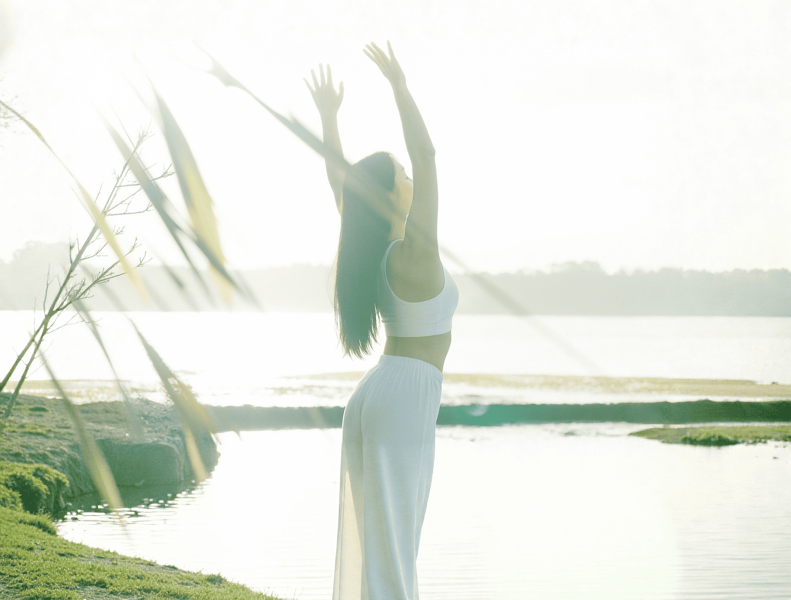
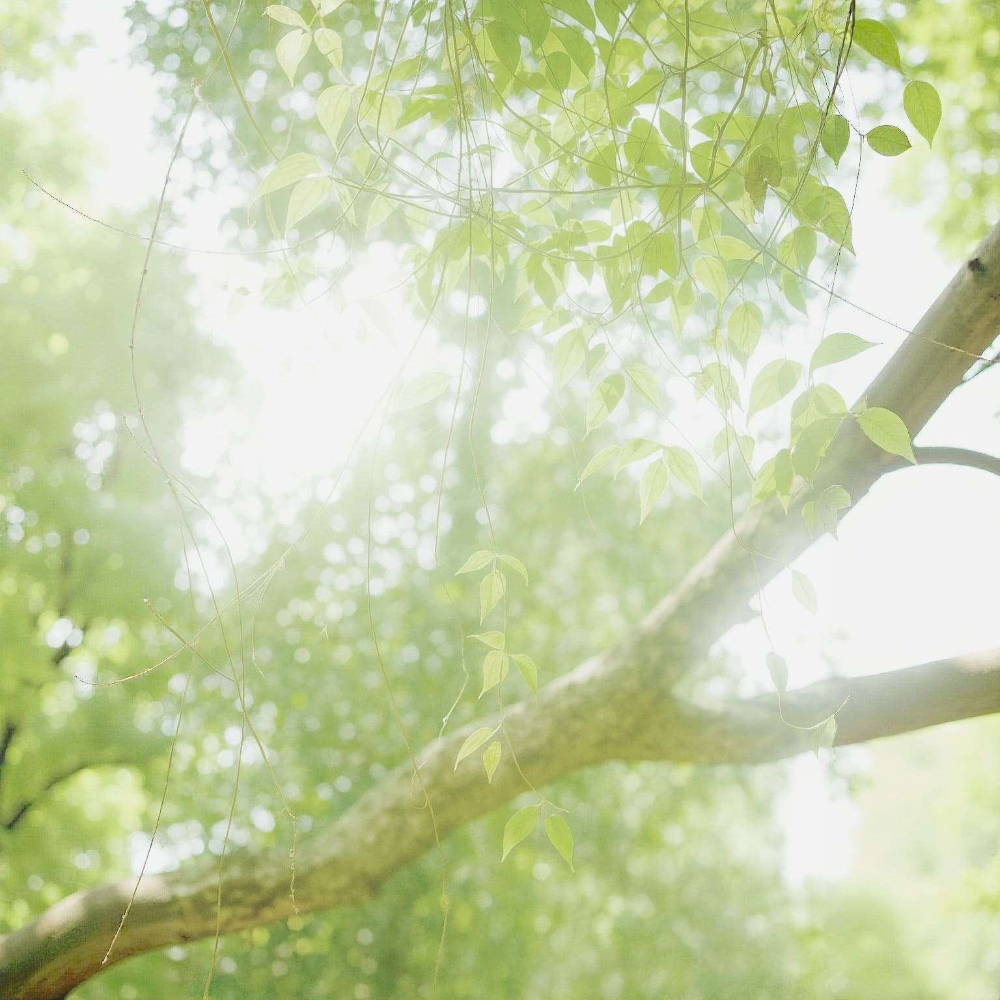
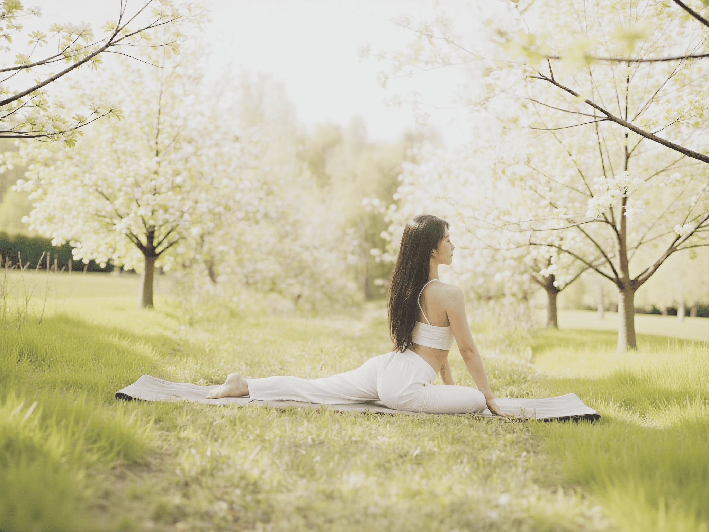
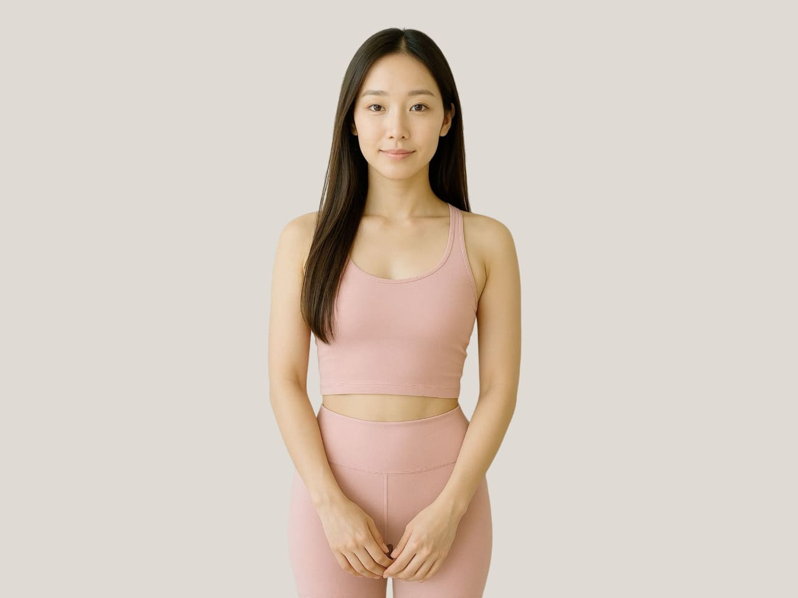
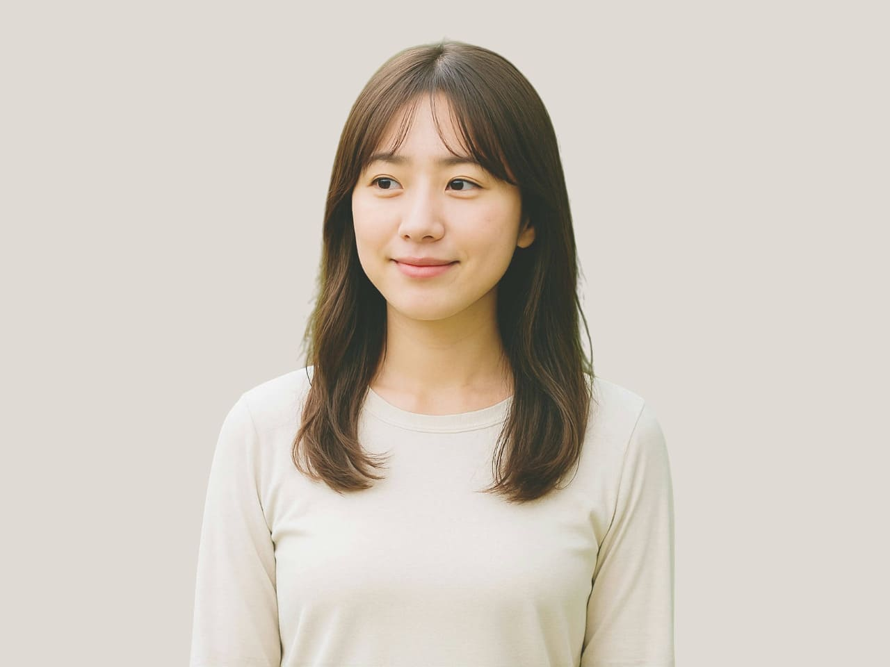
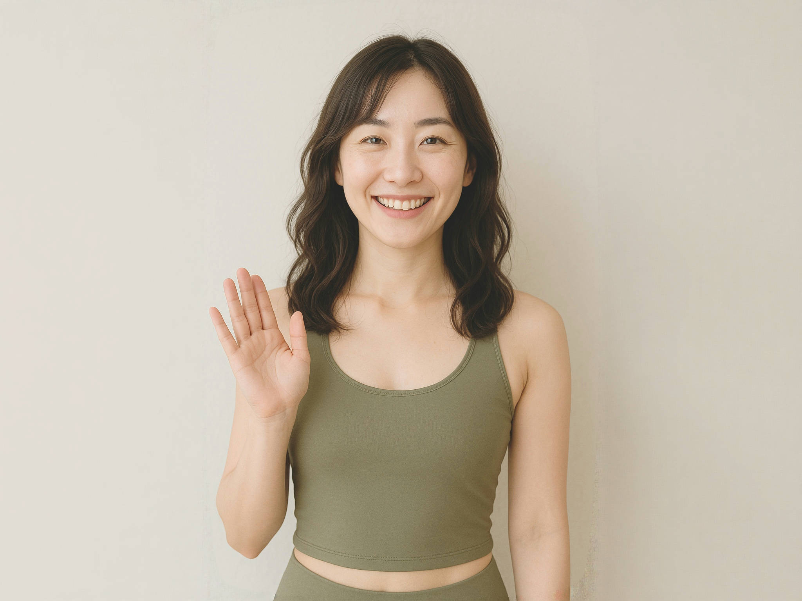
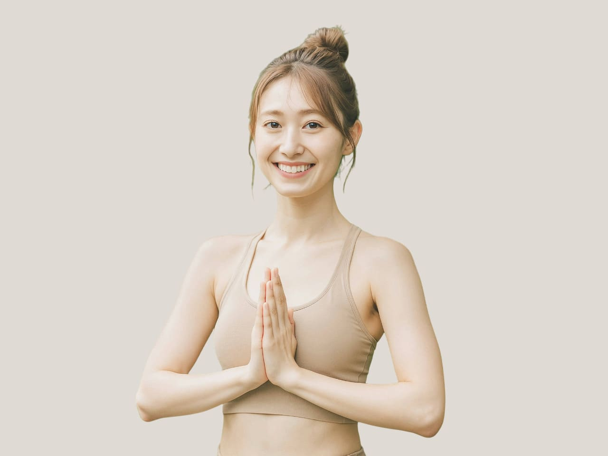
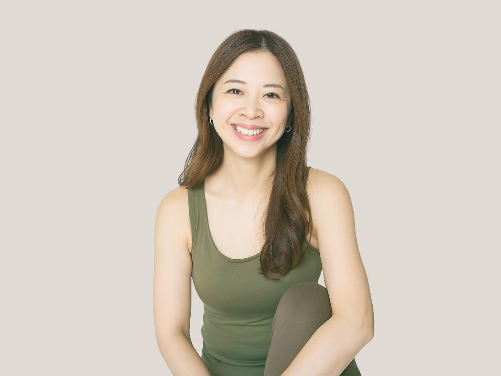
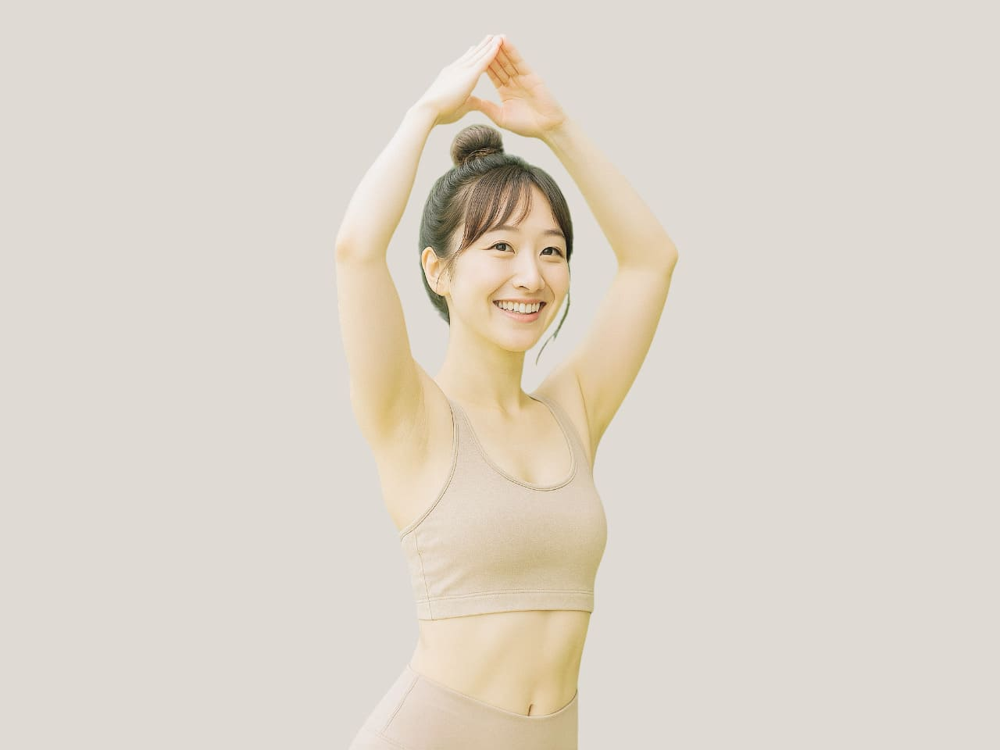
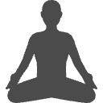

- 
- 
- 
Studio Yura
心も体もほぐれて咲く
私らしい美しさ。
選んだのは“自分を大切にする時間”。
女性専用・少人数だからこそ、一人ひとりの呼吸に寄り添い、心と身体をやさしく整えていく。
日常に静かに溶け込むヨガは、ただ動くだけではなく、心まで深く癒す習慣へ。
整った私から始まる暮らしは、もっと軽やかで、もっと心地よい。
ABOUT
STEP1
女性の心と体に寄り添う
プログラム
studio yuraは「女性専用」。
女性の体の変化やリズムに合わせたプログラムをご用意しています。
骨盤調整やホルモンバランスを整えるヨガなど、年齢やライフステージに応じた安心のレッスン。
無理なく続けられるから、運動が苦手な方も大丈夫。
心と体の両面から、毎日の健康と美しさをサポートします。
STEP2
少人数制だからこその丁寧な
サポート
最大6名までの少人数制レッスンだから、一人ひとりにしっかり目が行き届きます。
ポーズの取り方や呼吸の深め方を、その日の体調に合わせて丁寧にサポート。
初めてヨガに触れる方でも安心です。
小さなクラスならではの落ち着いた雰囲気の中で、自分のペースで心地よく、心と向き合い身体を動かしていただけます。
STEP3
隠れ家のような
リラックス空間
住宅街の中にひっそり佇むスタジオは、まるで隠れ家のよう。
自然光が差し込む木のぬくもりある空間に、やさしい音楽とアロマの香り。
ここに来るだけで、日常の喧騒から離れて心がほどけていきます。
「がんばらなくていい時間」を持つことが、明日への活力につながる。
そんな特別な居場所をご用意しています。
PROGRAM
studio yuraのヨガプログラムは
「Relax & Meditation（リラックス&メディテーション）」
「Condition & Selfcare（コンディション&セルフケア）」
「Energy & Daily care（エナジー&デイリーケア）」の3カテゴリを展開しています。
その日の気分や体調に寄り添って選べるから、
ヨガが初めての方も、長く続けている方も、自分らしく楽しめます。
INSTRUCTOR
日々の中でゆらぎやすい心と身体に、静けさと優しさを届けるインストラクターたち。
深い癒しや丁寧な動き、感性を大切にしたレッスンで、それぞれの“整える力”を引き出します。
穏やかに、そして凛として。
心地よい時間の中で、自分自身とやさしく向き合うひとときをサポートします。
-

HONOKA
デスクワーク続きの不調からヨガを始め、心と体が軽くなる感覚に夢中になりました。
今ではがんばりすぎる女性に、がんばるよりも“ほどよくゆるむ時間”を届けることを大切にしています。
日常の延長で気軽に通えて、自然体でいられるヨガを一緒に楽しみましょう！ -

RIKO
はじめましてRIKOです!
学生時代から姿勢に悩み、ヨガを通して自分の体と向き合う大切さを学びました。姿勢改善や体の使い方を丁寧にサポートし、体の土台を整えることを中心に、「できる・できない」よりも、「気づく・感じる」を大切にしています。
「できる範囲でOK」という気持ちで一緒にヨガを楽しみましょう! -

HARUNA
自然と深呼吸したくなるような、心がほっとする時間をお届けします。
「うまく動くこと」よりも「自分を感じること」を大切にするヨガを指導。
日々の忙しさでカチカチになった心と体を、ふわっとゆるめるお手伝いをさせてください。
一緒に“自分にやさしくできる時間”を見つけましょう！ -

AYUKA
元エステティシャンの経験から、アロマや音楽と組み合わせたリラックスヨガを担当しています。
がんばりすぎた日も、ここで一度リセット。
毎日に少しのやさしさと深呼吸を。心がふっと軽くなるような時間をお届けします。
“心地よさ”に身を委ねる時間を通して、一人ひとりが自分らしくいられる空間を大切にしています。 -

YURI
ヨガと出会って、“自分をいたわる大切さ”、”自分のペースで生きる大切さ”に気づきました。
女性のライフステージに寄り添うヨガをテーマに活動をはじめ、 女性の体や心の変化に寄り添いながら、 更年期ケアやホルモンバランスを意識したクラスを担当。
呼吸を整えることで、心まで静かに整う。
そんな“やさしいリセットの時間”をお届けします。 -

SAKI
SAKIです!
エネルギーを感じるフローヨガを中心に担当しています！太陽のように前向きなエネルギーと、 軽やかに流れるフロースタイルで、心も体も動かして気持ちまでポジティブに整う、そんなレッスンを大切にしています。
「動くことで癒される」体験を、一緒に楽しみましょう！ -
HONOKA
デスクワーク続きの不調からヨガを始め、心と体が軽くなる感覚に夢中になりました。
今ではがんばりすぎる女性に、がんばるよりも“ほどよくゆるむ時間”を届けることを大切にしています。
日常の延長で気軽に通えて、自然体でいられるヨガを一緒に楽しみましょう！ -
RIKO
はじめましてRIKOです!
学生時代から姿勢に悩み、ヨガを通して自分の体と向き合う大切さを学びました。姿勢改善や体の使い方を丁寧にサポートし、体の土台を整えることを中心に、「できる・できない」よりも、「気づく・感じる」を大切にしています。
「できる範囲でOK」という気持ちで一緒にヨガを楽しみましょう! -
HARUNA
自然と深呼吸したくなるような、心がほっとする時間をお届けします。
「うまく動くこと」よりも「自分を感じること」を大切にするヨガを指導。
日々の忙しさでカチカチになった心と体を、ふわっとゆるめるお手伝いをさせてください。
一緒に“自分にやさしくできる時間”を見つけましょう！ -
AYUKA
元エステティシャンの経験から、アロマや音楽と組み合わせたリラックスヨガを担当しています。
がんばりすぎた日も、ここで一度リセット。
毎日に少しのやさしさと深呼吸を。心がふっと軽くなるような時間をお届けします。
“心地よさ”に身を委ねる時間を通して、一人ひとりが自分らしくいられる空間を大切にしています。 -
YURI
ヨガと出会って、“自分をいたわる大切さ”、”自分のペースで生きる大切さ”に気づきました。
女性のライフステージに寄り添うヨガをテーマに活動をはじめ、 女性の体や心の変化に寄り添いながら、 更年期ケアやホルモンバランスを意識したクラスを担当。
呼吸を整えることで、心まで静かに整う。
そんな“やさしいリセットの時間”をお届けします。 -
SAKI
SAKIです!
エネルギーを感じるフローヨガを中心に担当しています！太陽のように前向きなエネルギーと、 軽やかに流れるフロースタイルで、心も体も動かして気持ちまでポジティブに整う、そんなレッスンを大切にしています。
「動くことで癒される」体験を、一緒に楽しみましょう！
TRIAL LESSON
体験レッスンのご予約の流れ
-
STEP1
スケジュールから
希望のレッスンを選ぶ -
STEP2
WEBまたは
電話から予約する -
STEP3
当日わくわくな気持ちで

レッスンに参加する
FAQ
初心者の方も大歓迎です。姿勢や呼吸から丁寧にサポートしますので、安心してご参加ください。
基本的に年齢制限はありません。クラスの内容によって安全のため参加をお断りする場合があります。
症状により参加可否が異なります。安全のため、事前に体調や持病・怪我の有無をお知らせください。
当スタジオには更衣室はございますが、シャワー設備はありません。汗拭き用のタオルをご持参ください。
保育スペースはないため原則不可ですが、ママ向けクラスではお子様同伴での参加が可能です。
ヨガマットはレンタル可能ですが、ウェアの貸し出しは行っていません。動きやすい服をご持参ください。
ACCESS
〒000-0000
札幌市中央区南X条西XX丁目XX-XX
XXビル XXX号室
地下鉄東西線「円山公園駅」から徒歩10分
営業時間：9:00-22:00
定休日：火曜日
駐車場2台分有